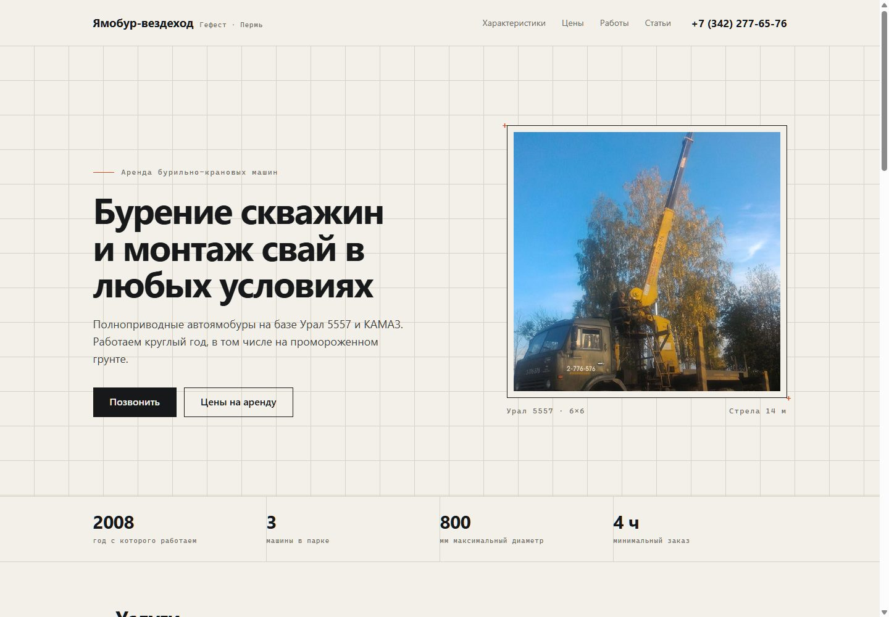
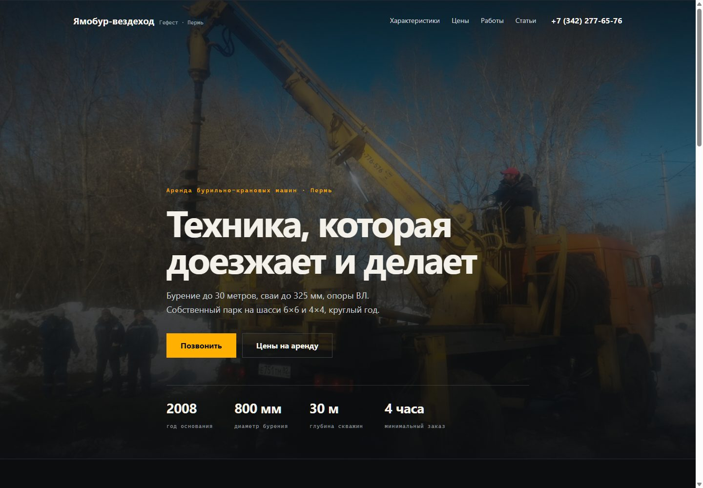
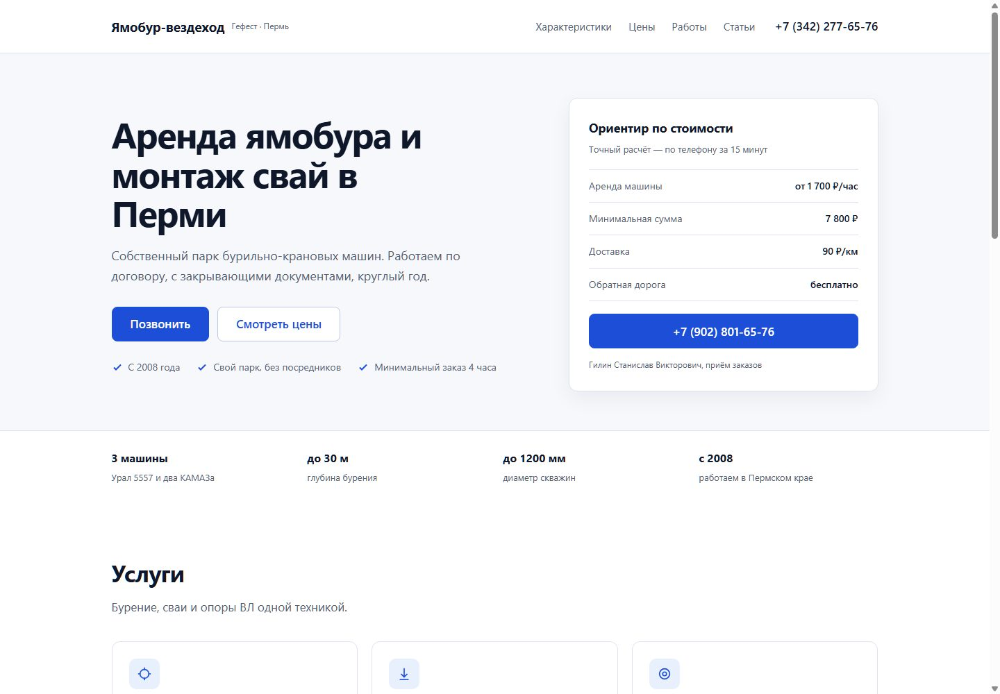
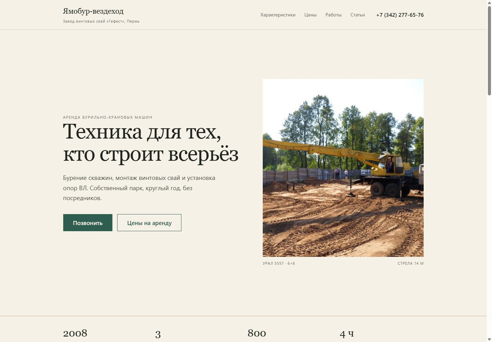
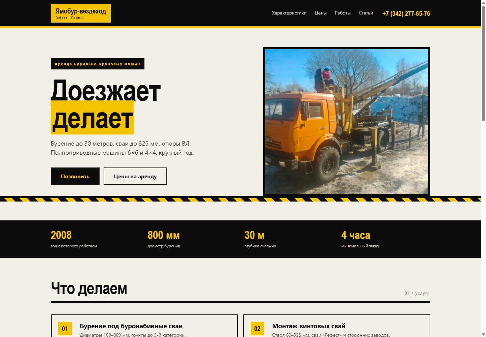

Варианты главной страницы
Несколько направлений оформления на одном и том же контенте. Скриншоты сняты на ширине 1440 px, каждый вариант — отдельный статичный файл: можно открыть, пролистать и сравнить на телефоне. Список собирается по папкам site/design/, поэтому количество вариантов может быть любым.
-

01Чертёж
Светлый индустриальный вариант: бумажный фон, сетка, моно-подписи и оранжевый акцент. Секции пронумерованы, услуги — строками вместо карточек, техника — таблицами ТТХ. Хорошо читается на телефоне и не зависит от качества фото.
Открыть вариант -

02Ночная смена
Тёмный кинематографичный вариант: фото во весь экран, крупная типографика, янтарный акцент и цифры в одну строку. Самый эмоциональный — ставит на технику и масштаб работ.
Открыть вариант -

03Договор
Светлый B2B-вариант: белый фон, синий акцент, блок с ориентиром по стоимости в первом экране и таблица сравнения машин со ставками. Самый спокойный и «продающий» — рассчитан на подрядчиков и юрлиц.
Открыть вариант -

04Тёплая бумага
Редакционный вариант: тёплая бумага, глубокий зелёный, терракота и антиква в заголовках. Много воздуха, тонкие линии, тексты читаются как журнал. Самый спокойный и «дорогой» по ощущению.
Открыть вариант -

05Сигнальный
Плакатный вариант: чёрный, тёплый белый и сигнальный жёлтый, сжатая крупная типографика, жёсткие рамки и предупреждающая полоса. Самый громкий и «строительный» — хорошо запоминается, но требует аккуратности с фото.
Открыть вариант
Страница собрана скриптом tools/build-design.mjs. Чтобы добавить вариант, положите папку с index.html и meta.json в site/design/ и запустите сборку заново.